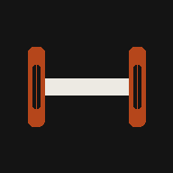

IRON LOG
Week 1 · Strength
Train
Progress
History
Sync
Exercise
Top weight per session
Total volume (kg × reps)
No sessions logged yet. Finish a workout in Train and hit Save.
Not connected
GitHub username
Repo name
Personal access token
Connect & sync now
How to get a token (2 min)
On GitHub: tap your profile photo →
Settings
.
Scroll down →
Developer settings
.
Personal access tokens → Fine-grained tokens → Generate new token
.
Under "Repository access," choose
Only select repositories
→ pick
iron-log
.
Under "Permissions → Repository permissions," set
Contents: Read and write
.
Generate, then copy the token here. GitHub only shows it once.
This token only controls this one repo. Nothing else on your account is touched. It's stored only in this browser — never uploaded anywhere else.
Disconnect